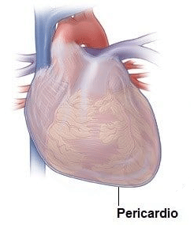

O pericárdio é um saco fibroso e cheio de líquido que envolve o corpo muscular do coração e as raízes dos grandes vasos (aorta, artéria pulmonar, veias pulmonares e veias cava superior e inferior).

Estrutura anatômica
O pericárdio é composto de duas camadas principais: uma camada externa resistente, conhecida como pericárdio fibroso, e uma camada interna fina, conhecida como pericárdio seroso.
Pense em uma laranja… onde a casca externa pode ser considerada a camada fibrosa, e o material branco interno seria a camada serosa.
MOORE: Keith L. Anatomia orientada para a clínica. 9 ed. Rio de Janeiro: Guanabara Koogan, 2024.
Pericárdio fibroso
Contínuo com o tendão central do diafragma, o pericárdio fibroso é constituído por tecido conjuntivo resistente e é relativamente não distensível.
Sua estrutura rígida evita o enchimento rápido do coração, mas pode contribuir para sérias consequências clínicas.
Pericárdio seroso
Fechado dentro do pericárdio fibroso, o próprio pericárdio seroso é dividido em duas camadas: a camada parietal externa que reveste a superfície interna do pericárdio fibroso e a camada visceral interna que forma a camada externa do coração (também conhecido como epicárdio).
Cada camada é composta de uma única folha de células epiteliais simples pavimentosa + tecido conjuntivo frouxo, conhecida como mesotélio.
Encontrada entre as camadas serosas externa e interna é a cavidade pericárdica, que contém uma pequena quantidade de fluido seroso lubrificante.
O líquido seroso serve para minimizar o atrito gerado pelo coração quando ele se contrai.
ROSS P. W. Histologia – Texto e Atlas. 8 ed. Rio de Janeiro: Guanabara Koogan, 2021.
Funções
O pericárdio tem muitos papéis fisiológicos, sendo os mais importantes detalhados abaixo:
O pericárdio possui muitos papéis fisiológicos, sendo os mais importantes detalhados abaixo.
Corrige o coração – no mediastino e limita seu movimento.
A fixação do coração é possível porque o pericárdio está ligado ao diafragma, esterno e túnica adventícia (camada externa) dos grandes vasos
Evita o enchimento excessivo – do coração.
A camada fibrosa relativamente inextensível do pericárdio impede que o coração aumente de tamanho muito rapidamente, colocando assim um limite físico no tamanho potencial do órgão
Lubrificação – Uma fina película de fluido entre as duas camadas do pericárdio seroso reduz o atrito gerado pelo coração enquanto ele se move dentro da cavidade torácica
Proteção contra infecção – O pericárdio fibroso serve como uma barreira física entre o corpo muscular do coração e os órgãos adjacentes propensos a infecções, como os pulmões.
Inervação
O nervo frênico (C3-C5) é responsável pela inervação somática do pericárdio, além de fornecer inervação motora e sensorial ao diafragma.
Com origem no pescoço e viajando pela cavidade torácica, o nervo frênico é uma fonte comum de dor referida, com um exemplo importante de dor no ombro causada por pericardite.